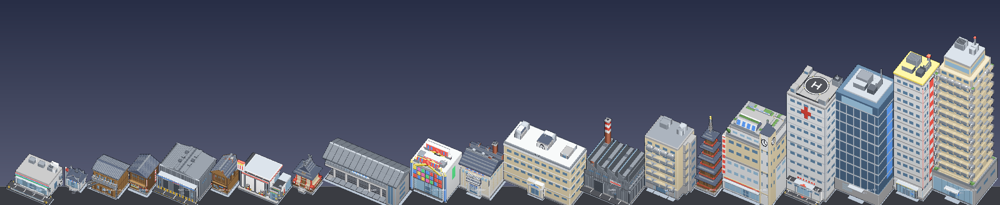

▦
像素资产目录 · Tokyo Building Set
403 个可旋转像素资产 · 东京城市/地标/街道 + 全日本名胜 + 车辆 + 街区新元素 · 统一比例 12px/m · 点卡片内嵌旋转 viewer（夜晚霓虹发光，手机可触屏拖动）
⚙ 参数化建筑生成器
7 类型 / 33 形态 · 层高·宽窄·空调·广告牌·屋顶设备·配色
↗

没有匹配的资产。
↗ 新标签打开
✕ 关闭 (Esc)